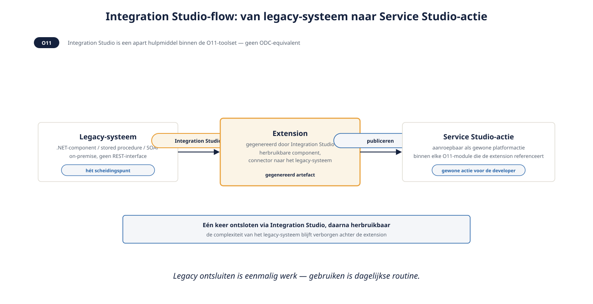
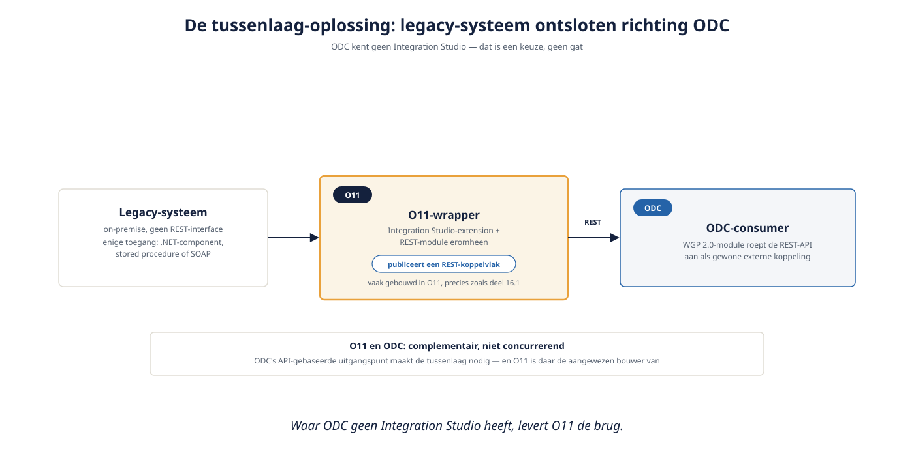

Deel 16 — Integratie op schaal: externe systemen, foutafhandeling, retries
Slidedeck · Ductus-cursus OutSystems · Niveau 2 — Professional · deel 16 van 30 · 14 slides
Slide 1 — Title: OutSystems: Vakbekwaam
OutSystems: Vakbekwaam
Deel 16 — Integratie op schaal: externe systemen, foutafhandeling, retries
Slide 2 — Bullets: Van één API naar een landschap
Van één API naar een landschap
- Deel 9: Verzuimmeldingen → Mutatie-API
- Nu: Mutatieplatform + extern HR-systeem + legacy on-premise
- Legacy zonder REST-interface: hét scheidingspunt
Slide 3 — Section: Integration Studio (O11)
Integration Studio (O11)
Slide 4 — Bullets: Legacy ontsluiten
Legacy ontsluiten
- Apart hulpmiddel binnen de O11-toolset
- Connector naar .NET-component, stored procedure, SOAP
- Genereert extension, bruikbaar als gewone actie

Slide 5 — Section: Connectors in ODC
Connectors in ODC
Slide 6 — Statement: ODC kent geen Integration Studio.
ODC kent geen Integration Studio.
Dat is een keuze, geen gat.
Slide 7 — Bullets: De tussenlaag-oplossing
De tussenlaag-oplossing
- ODC: API-gebaseerde integratie als uitgangspunt
- Legacy zonder REST: wrapper nodig (vaak gebouwd in O11)
- O11 en ODC: complementair, niet concurrerend

Slide 8 — Opdracht: Opdracht 16.1 — Welk mechanisme past hier?
Opdracht 16.1 — Welk mechanisme past hier?
Drie integratiesituaties.
→ Werkboek 16.1
Slide 9 — Opdracht: Baan A / Baan B
Baan A / Baan B
A — Legacy ontsluiten met Integration Studio
B — Tussenlaag ontwerpen richting ODC
→ Werkboek, eigen baan
Slide 10 — Section: Foutafhandeling en retries op schaal
Foutafhandeling en retries op schaal
Slide 11 — Bullets: Consistent, niet ad-hoc
Consistent, niet ad-hoc
- Vast aantal pogingen, oplopende wachttijd
- Gedeelde Timer-configuratie in de Core-laag
- Voorproefje van deel 18 (asynchroon)
Slide 12 — Opdracht: Reflectieopdracht 16.2
Reflectieopdracht 16.2
Waarom is dit geen tekortkoming van ODC?
→ Werkboek 16.2
Slide 13 — Bullets: Kernpunten deel 16
Kernpunten deel 16
- Landschapsschaal: meerdere integraties, niet één
- Integration Studio (O11) vs tussenlaag-noodzaak (ODC) — structureel verschil
- O11 en ODC kunnen complementair samenwerken in coëxistentie
- Retry-strategie: gedeeld en consistent, niet per module uitgevonden
Slide 14 — Section: Volgende deel: Beveiliging serieus
Volgende deel: Beveiliging serieus